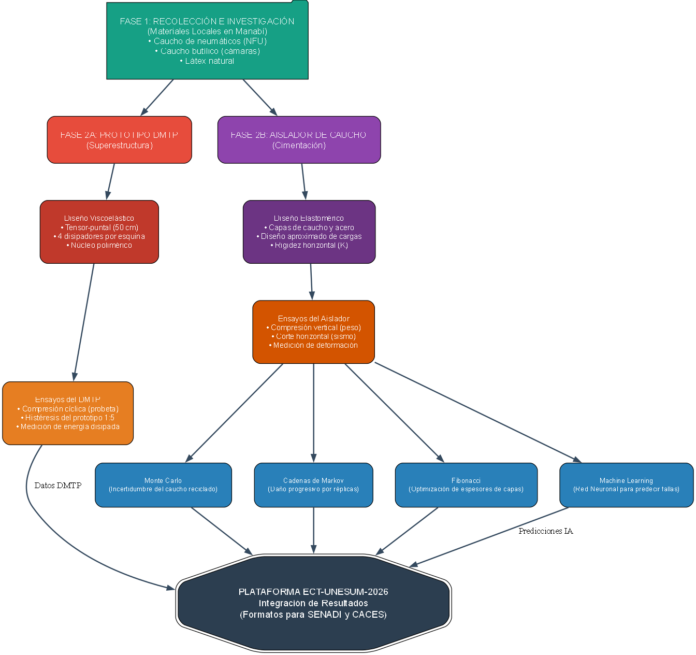

<!-- ========================================== -->
<!-- ESTRUCTURA DEL SEMILLERO (ESTILO M08)      -->
<!-- ========================================== -->
<div style="max-width: 1200px; margin: 30px auto; padding: 0 20px;">
    
    <!-- Tarjeta Principal del Semillero -->
    <div style="background: #0d1b2a; border-radius: 15px; padding: 30px; box-shadow: 0 10px 30px rgba(0,0,0,0.5); border: 1px solid #1a2a40;">
        
        <!-- Encabezado -->
        <div style="display: flex; align-items: center; gap: 15px; margin-bottom: 20px;">
            <span style="font-size: 2.5em;">🌱</span>
            <div>
                <h3 style="color: #f39c12; margin: 0; font-size: 1.6em;">SEMILLERO DE INNOVACIÓN — ECT-UNESUM</h3>
                <p style="color: #bdc3c7; margin: 5px 0 0 0; font-size: 1em;">Conectando Proyectos, Procesos y Tutoría Socrática</p>
            </div>
        </div>

        <!-- Fases del Semillero (Replicando el estilo de M08) -->
        <div style="display: flex; flex-direction: column; gap: 10px; margin-bottom: 25px;">
            
            <!-- Fase 1 -->
            <div style="background: #152238; border-left: 4px solid #3498db; border-radius: 8px; padding: 15px; display: flex; align-items: center; gap: 15px;">
                <span style="font-size: 1.5em;">📘</span>
                <div>
                    <strong style="color: #3498db; font-size: 1.1em;">F1 — Proceso de Ideación y Diagnóstico</strong>
                    <p style="color: #bdc3c7; margin: 3px 0 0 0; font-size: 0.9em;">Identificación de problemas territoriales + Análisis Forense + Vinculación con el M07.</p>
                </div>
            </div>

            <!-- Fase 2 -->
            <div style="background: #152238; border-left: 4px solid #2ecc71; border-radius: 8px; padding: 15px; display: flex; align-items: center; gap: 15px;">
                <span style="font-size: 1.5em;">🔬</span>
                <div>
                    <strong style="color: #2ecc71; font-size: 1.1em;">F2 — Proceso de Prototipado y Ensayo</strong>
                    <p style="color: #bdc3c7; margin: 3px 0 0 0; font-size: 0.9em;">Construcción del DMTP (1:5) + Ensayos de laboratorio + Validación de materiales locales.</p>
                </div>
            </div>

            <!-- Fase 3 -->
            <div style="background: #152238; border-left: 4px solid #e74c3c; border-radius: 8px; padding: 15px; display: flex; align-items: center; gap: 15px;">
                <span style="font-size: 1.5em;">🧠</span>
                <div>
                    <strong style="color: #e74c3c; font-size: 1.1em;">F3 — Tutoría Socrática e IA</strong>
                    <p style="color: #bdc3c7; margin: 3px 0 0 0; font-size: 0.9em;">Acompañamiento con IA (DeepSeek) para guiar al estudiante mediante preguntas, no respuestas.</p>
                </div>
            </div>
        </div>

        <!-- Sección del Organigrama y Proyectos Conectados -->
        <div style="display: flex; flex-wrap: wrap; gap: 20px; align-items: center; background: #ffffff; padding: 20px; border-radius: 10px;">
            <div style="flex: 1; min-width: 250px;">
                <h4 style="color: #0d1b2a; margin-top: 0;">Organigrama de Conexión de Proyectos</h4>
                <p style="color: #415a77; font-size: 0.9em; line-height: 1.5;">
                    El semillero actúa como el nodo central que conecta el <strong>Proyecto DMTP</strong> (Superestructura), el <strong>Proyecto Aislador de Caucho</strong> (Cimentación) y la <strong>Plataforma ECT-UNESUM</strong>, bajo una estructura de procesos definidos.
                </p>
                <a href="#" style="display: inline-block; margin-top: 10px; background: #f39c12; color: #0d1b2a; padding: 8px 15px; border-radius: 5px; text-decoration: none; font-weight: bold; font-size: 0.9em;">🤖 Acceder al Tutor Socrático (IA)</a>
            </div>
            <div style="flex: 1; min-width: 250px; text-align: center;">
                <!-- Aquí va tu imagen del organigrama -->
                
            </div>
        </div>

    </div>
</div>